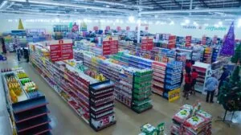

Fresh Prices, No Surprises
Roban Stores is Awka's trusted neighbourhood supermarket. A full catalogue of everyday groceries with clear pricing, so you know exactly what to expect before you walk in.
01Why Shop With Us
We built Roban Stores around one simple idea: shoppers in Awka deserve to know what's in stock and what it costs before they make the trip.
Everyday Fair Prices
No hidden mark-ups and no guessing games. Every product on our shelves is priced clearly and kept up to date on this site.
Wide Selection
From fresh produce and bakery to household essentials and pantry staples, we stock what a growing Awka household actually needs.
Friendly, Local Service
We are part of this community. Our staff know the store inside and out and are always ready to help you find what you're looking for.

02Step Inside Roban Stores
Our supermarket in Awka is built for a quick, comfortable shop — wide, well-lit aisles, clearly labelled sections, and shelves that stay stocked. Whether you're picking up a few items on your way home or doing the week's full shopping, you'll find your way around easily.
Every category you see online mirrors what's on our shelves in-store, so the prices and products you browse here are the same ones waiting for you at Roban Stores.
03Shop by Category
A quick look at what's in store. Tap any category to see the full price list.
"I used to drive out to check three different shops before I found the best price. Now I check Roban Stores online first, and most times, that's the only stop I need."
— Chidinma A., Awka